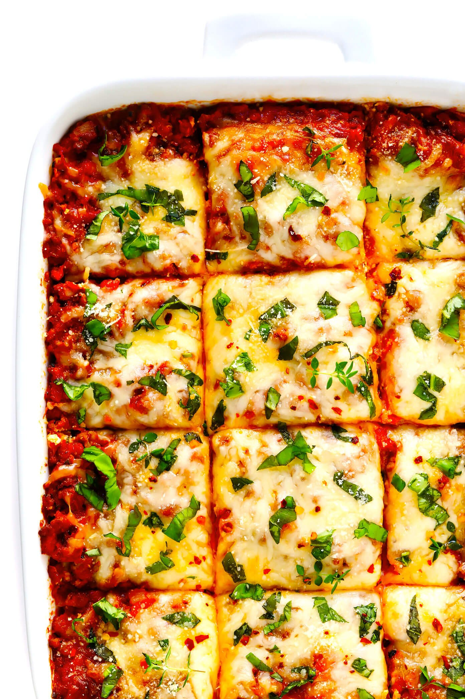

Lasagna

Description
The absolute bestlasagna recipe — easy to make, layered up with the most delicious flavors, and so incredibly cozy and comforting.
Ingredients
- Meat sauce:
- 1 ½ pounds ground Italian sausage (or you can do half sausage + half ground beef)
- 1 medium white or yellow onion, peeled and diced
- 6 large garlic cloves, peeled and minced
- 3 tablespoons tomato paste
- 1/2 teaspoon crushed red pepper flakes
- 1/2 cup dry red wine (or beef stock)
- 3 (15-ounce) cans whole tomatoes*, drained
- 1/2 cup diced roasted red peppers
- 2 teaspoons dried oregano
- 1 bay leaf
- 1 teaspoon fine sea salt
- 1/2 teaspoon freshly-cracked black pepper
- Cheese mixture:
- 2 (15-ounce) containers ricotta cheese (part-skim or whole milk)
- 1 cup freshly-grated Parmesan cheese
- 1 cup tightly-packed fresh basil leaves, roughly chopped
- 1 egg
- Remaining layers:
- 4 cups (1 pound) shredded mozzarella
- 15 no-boil lasagna noodles (or however many needed to make three layers in your pan*)
- optional toppings: extra basil, Parmesan cheese and/or crushed red pepper flakes
Steps
- Make the sauce: In a large sauté pan or stockpot, cook the sausage and onion over medium-high heat
until the sausage is completely browned, crumbling it with a wooden spoon as it cooks.
Add the garlic, tomato paste and crushed red pepper flakes and sauté for 2 more minutes,
stirring occasionally. Stir in the wine, using a wooden spoon to scrape up any of the browned bits
that have stuck to the bottom of the pan. Add the tomatoes, roasted red peppers, oregano, bay leaf,
salt and pepper, and stir to combine. Use the wooden spoon to break up the tomatoes into small pieces
as the sauce continues to cook. Once the sauce reaches a simmer, reduce heat to medium to maintain
the simmer. Then let the sauce continue to simmer and reduce down for about 10-15 minutes,
or until about half of the juices have evaporated. (You still want the sauce to be fairly
juicy, just not overly so.) Discard bay leaf. Remove pan from heat and set aside until ready to use.
- Make the cheese mixture: Meanwhile, in a separate mixing bowl, stir together the ricotta, Parmesan, basil and egg until combined.
- Prep the oven and baking dish: Heat the oven to 375°F and mist a 9 x 13-inch baking dish with cooking spray.
- Assemble: Next, it’s assembly time!
- First layer: Spread 1.5 cups of the sauce mixture evenly along the bottom of the pan.
Then add on a layer of lasagna noodles (so that the surface of the pan is covered, more or less),
followed by 1/3 of the ricotta mixture (which I recommend adding in small spoonfuls, which you can
then spread out into an even layer), followed by 1 cup of the shredded mozzarella.
- Second layer: Evenly layer 1/3 of the remaining sauce, 1 more round of lasagna noodles,
1/2 of the remaining ricotta mixture, and 1 cup shredded mozzarella.
- Third layer: Evenly layer 1/2 of the remaining sauce, 1 more round of lasagna noodles,
all of the remaining ricotta mixture.
- Fourth layer: Evenly layer all of the remaining sauce, 1 cup shredded mozzarella.
- Bake: Loosely tent aluminum foil to cover the pan (try to avoid touching the cheese).
Transfer pan to the oven and bake for 45 minutes. Remove the aluminum foil and bake for 15-20 more minutes,
until the sauce is bubbly around the edges and the top of the cheese starts to bubble and turn golden.
Transfer the pan to a wire baking rack and cool for 5 minutes.
- Serve: Sprinkle with your desired toppings, slice, serve warm and enjoy!